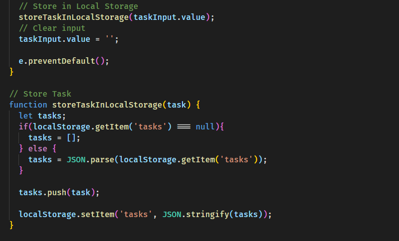

Finished the Todo List project from "Modern Javascript from the Beginning" at Udemy, by Brad Traversy. Today we persisted the data to Local Storage, making it available in the DOM even after refreshing the page.

We also included the delete code and clear tasks function.
One thing Brad didn't implement but I did was to included the option to delete the data from the Local Storage using the Clear button as well. I believe he forgot about it :)